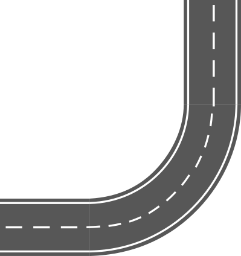
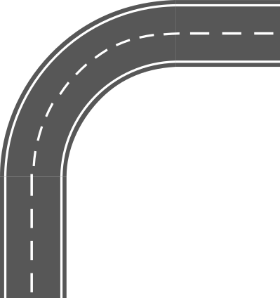
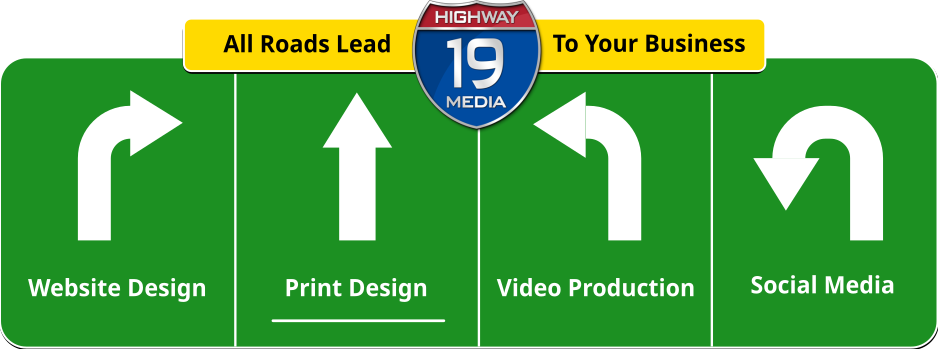
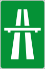
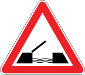

A Clear RoadForwardfor Your Business
You've done the hard part.Now let's make sure people can see it.
Running a local business means wearing every hat. Manager,
salesperson, customer service, and somehow marketer too. You're stretched
thin, and your competitors are getting noticed while you're still figuring
out where to start.
Your Road Map

Great Work, No Signage
The best shop on the road is worthless if nobody sees the sign.
You finish a job and it looks great. Then it disappears. No
photos, no video, nothing a future customer can find. The guy down the road
does worse work with better pictures, and he's the one getting the call.